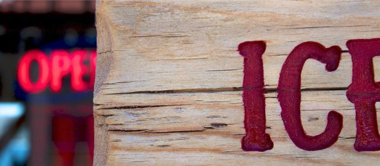

Recovered weblog entry
Hello, world
After discussing blog options with my elder brother Adam, i felt encouraged to sit down and update the site. Progress was made, with Wordpress being upgraded and the appropriate app being configured on the new iPad.
I won't talk about work too much on this or any other blog, but I'll use it to bang out other weird and random thoughts again. I've started shooting more photography, so what little free time i have I'd like to spend doing that. If circumstances allow, I'll finally get around to updating the main web site via iWeb.
That's it for now. A brief, but motivating entry.
